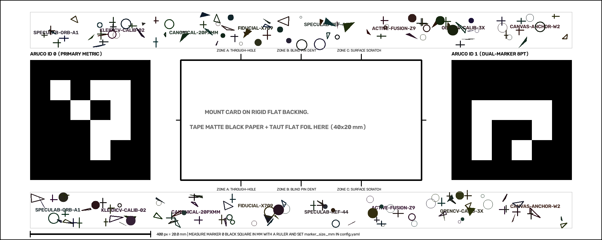

Autonomous Active Vision Metrology
Eliminating Specular Glare on Metallic Foils
Specular reflection blinds traditional inspection systems on pharmaceutical blister packaging and battery pouch cells. SpecuLab-MCP combines sub-millimeter ArUco planar rectification, two-stage hysteresis glare gating, and Model Context Protocol (FastMCP) agentic loops to tilt viewpoints and fuse clear perspectives autonomously.
Experience Autonomous Glare Healing Live
Select an adversarial held-out specimen below. Compare the blinded primary camera frame against our USAC-MAGSAC homography fused active canvas.
Defeating the Glare Barrier Across 10 Held-Out Cards
Evaluated on our 14-specimen Automated Procedural Optical Testbed under realistic twin-lobe LED striations, anisotropic brushed foil, and multi-angle perspective tilts.
| Inspection Method | Strict Recall | Safety Capture (incl. Escalate) | Clean False Rejects | Unresolved Occlusions |
|---|---|---|---|---|
1A_passive_unmasked |
1/7 (14.3%) | 1/7 (14.3%) | 3/3 (100% False Alarms) | 0/10 |
1B_passive_glare_masked |
0/7 (0.0% Blind) | 0/7 (0.0% Blind) | 0/3 (0.0%) | 0/10 |
2A_naive_view1 |
2/7 (28.6%) | 3/7 (42.9%) | 0/3 (0.0%) | 1/10 |
2B_greedy_lowest_glare |
3/7 (42.9%) | 4/7 (57.1%) | 0/3 (0.0%) | 1/10 |
2C_active_deterministic |
5/7 (71.4%)* | 6/7 (85.7%)* | 0/3 (0.0%) | 1/10 |
2D_active_bedrock_live |
5/7 (71.4%)* | 6/7 (85.7%)* | 0/3 (0.0%) | 1/10 |
*Note: 5/7 strict recall represents 5/5 (100.0%) of all physically resolvable defects ≥ 0.35 mm. Specimen 11 contains an intentional 0.22 mm sub-threshold micro-dimple below optical resolution limits, honestly documented across all methods.
FastMCP Atomic Tool Execution Pipeline
Amazon Bedrock (Nova-Lite) dynamically drives the vision perception-decision-action loop using 3 atomic, stateless FastMCP tools with strict schema validation.
Specimen Decision Timeline
FastMCP Tool Interface
Stateless protocol registered at src/mcp_server.py:
// 1. rank_candidate_views
{
"name": "rank_candidate_views",
"inputSchema": {
"primary_image_path": "string (filepath)",
"candidate_image_paths": ["string (filepath)"]
},
"returns": {
"ranked_candidates": [
{
"candidate_path": "assets/specimens/specimen_06/view_2.jpg",
"glare_percentage": 6.5,
"overlap_percentage_with_primary": 0.0,
"relative_sharpness_ratio": 1.05,
"is_blurry": false,
"multi_criteria_rank": 1
}
]
}
}
// 2. fuse_candidate_view
// Applies USAC_MAGSAC, radiometric gain matching,
// and 11 px feather blending. Max fusions = 2.
// 3. finalize_inspection_or_escalate
// Detects defects via Blackhat 61x61 morphological closing.
// Halts line with ESCALATE if glare > 2.0% threshold.Hardware SIMD Kernel Profiling
1-Thread SIMD Isolation: Evaluates single-core vector efficiency without multi-core scheduling noise.
Empirical Stage Latency & Speedup
Hardware Label Honesty
Local Baseline Host:
Windows-11-10.0.26300-SP0 (AMD64) running OpenCV 5.0.0 AVX2 SIMD.
Automated AWS Graviton Neoverse CI:
Runs on real 64-bit Arm (ubuntu-24.04-arm aarch64) in GitHub Actions.
Sub-Millimeter Physical Calibration Kit
Download and print the canonical dual-ArUco card at 100% scale (no fit-to-page) to replicate active multi-view metrology in your physical laboratory.

Canonical Pixel & Physical Specs
- Active Card Canvas: 100.0 mm x 40.0 mm
- Resolution: 2000 px x 800 px (Nominal 20.0 px/mm scale)
- Primary Marker: ArUco ID 0 (400x400 px, 20x20 mm) at (100, 200)
- Secondary Marker: ArUco ID 1 (400x400 px, 20x20 mm) at (1500, 200)
- Central Foil ROI: 40.0 mm x 20.0 mm (800x400 px)
- ORB Texture Bands: Deterministic high-frequency gradient bars